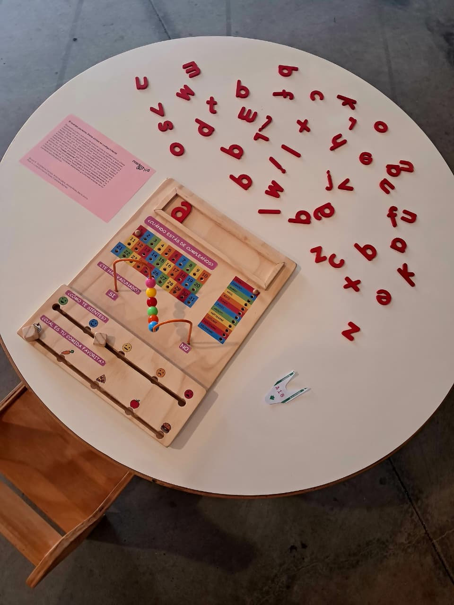
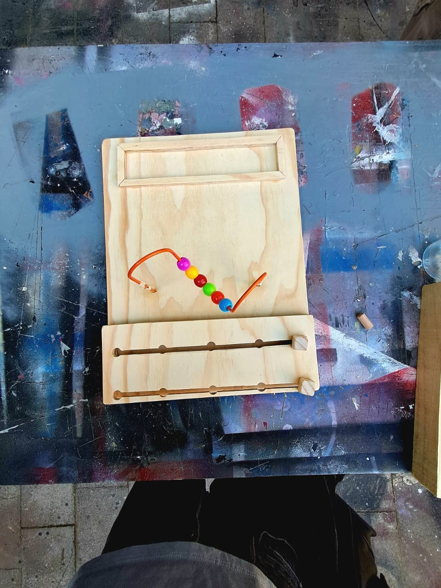
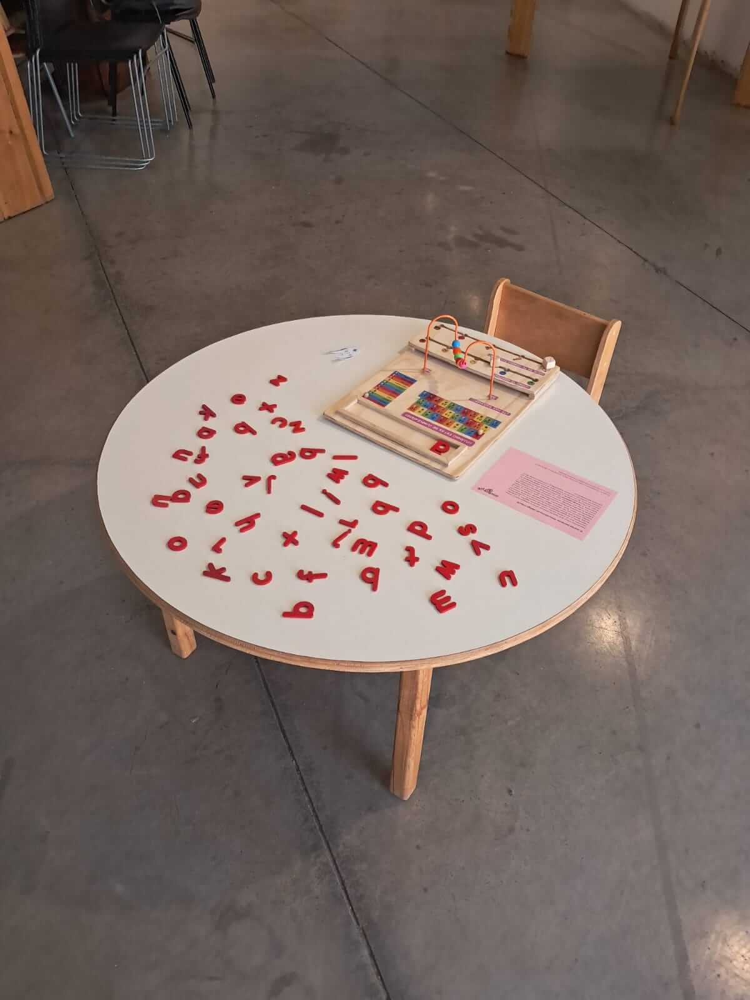
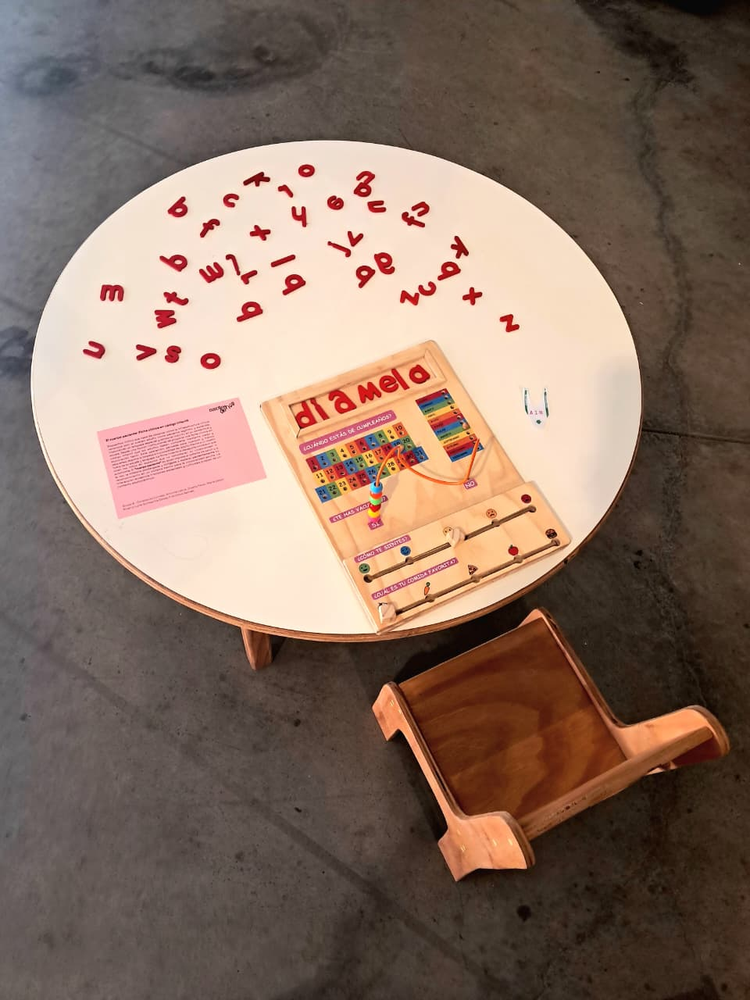

El cuerpo paciente
Un Cuerpo Paciente: La Corporalidad Infantil Postergada en el Espacio Clínico es un artefacto de diseño crítico que aborda la problemática de la escala y corporalidad adulta como estándar universal en los espacios de recepción de clínicas. El artefacto presenta una narrativa de ficción institucional que invierte roles: los adultos son obligados a completar una ficha de registro de salud a través de la manipulación y exploración táctil en lugar de la escritura tradicional. El formulario confronta al adulto con una interfaz y materialidad diseñadas específicamente para manos pequeñas, reflejando y cuestionando el desajuste diario que los niños experimentan en la infraestructura de salud.



